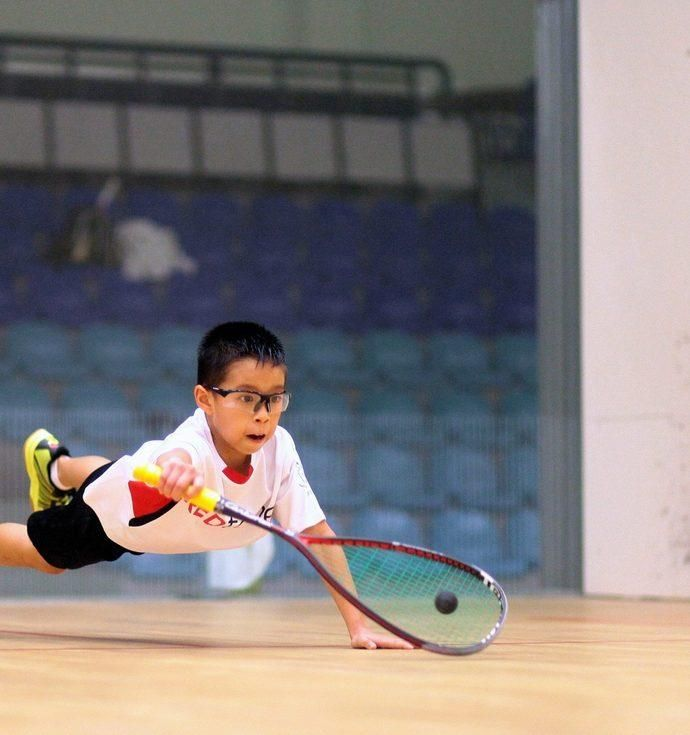
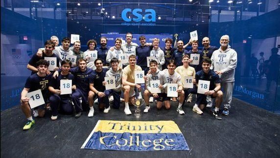

Cairo · October 2026
I came through qualifying at the Egyptian Open, won my first Diamond-level match, then took a game off the world No. 1. At the foot of the Pyramids.
Three years earlier, I was ranked #550 in the world. This is the log of how I got here, and where I’m going next.
Blue dotted lines are drafts in your voice: rewrite them so they sound like you
I
The Prodigy
2014–2023Asia No. 1 at 12
I started young in Kuala Lumpur, and I never stopped diving for the ball.
2014First title: KL International Junior Open, U11
2015Hong Kong Junior Open champion, U11
2016Tunas Harapan Award“Hard-working, humble yet high-achieving”

2017
Asian Junior Champion, Asia No. 1
Under-13 champion of Asia, at twelve. Already throwing myself at every ball, some things don’t change.
2020–21COVID shut most events downStill won the National Junior U19 title in 2021
2022World Juniors team bronze, playing No. 1 for Malaysia
2023Asian Junior Champion again, this time U19World Junior No. 6 · Junior Male Player of the Year
II
The Scholar-Athlete
2022–2026#550 → #142
I chose the harder road: US college squash and a Computer Science degree, 15,000 km from home.
2022Moved to Hartford for Trinity College
2023World ranking #550The starting line
Feb 2024RESTful MicroservicecodeMy first real backend: a Node.js API, shipped on Docker and Kubernetes
2024First PSA titles: Hong Kong and PerthPSA Player of the Month (June) · SUKMA gold · up to #145
2025Senior debut for Malaysia, in KuchingPSA titles in Kelowna and Atlanta · NESCAC Player of the Year · #142
Jan 2026RylocodeReading market sentiment from StockTwits and Reddit, with FinBERT

2026
First Malaysian to win the Skillman Award
US college squash’s highest honour. Same season, I captained Trinity to a 19–0 national title. Career record: 64–12.
Even in the most pressured moments, Joachim competes with a smile on the court.Moustafa Hamada, Trinity head coach
May 2026Graduated: BSc Computer Science
III
The Professional
2026 →#106 → #57
Full-time on tour now. Still training out of Hartford, still building between sessions.
Apr 2026Athlete Tournament TrackercodeEvery trip I had to ask: will this tournament make or lose money? So I built a tool that answers it.
Apr 2026r-c-modelcodeCalibrated up / neutral / down odds for stocks. Still running twice a day.
May 2026Hyder Trophy runner-up, New YorkOne win from the World Championships main draw
Jul 2026Chennai PSA Challenger championUp to #106
Sep 2026NASH Cup champion, London, OntarioPSA title No. 6

Oct 2026 · Cairo
A game off the world No. 1
Through qualifying at the CIB Egyptian Open, my first PSA Diamond event. First Diamond win 3–0, then a game off Mostafa Asal.
I’m sure he’s going to break through and is a future contender for a top ten spot.Mostafa Asal, world No. 1
19 OctCareer-high World #57, Malaysia No. 2“My goal was to break into the top 70 this season, and now that I am in the top 60, it is a huge bonus.”
Nov 2026Asian Teams bronze with Malaysia, IslamabadThree wins from three, all in straight games
→
Next
to be written
Dec 2026World Team Championships, CheongjuPlaying for Malaysia
This seasonWorld top 50
2027World top 30
2028World top 10The spot Asal tipped me for
Jul 2028LA 2028Squash’s first Olympic Games. I want to be there for Malaysia.